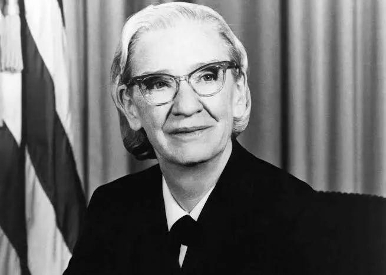

Grace Murray Hopper
Pioneira da Computação & Contra-Almirante (1906 – 1992)
A-0 System
Criou o 1º Compilador
COBOL
Linguagem Global de Negócios
Bug
Popularizou o Termo na Computação
Grace Murray Hopper (Nova Iorque, 1906 - 1992) foi Ph.D. em Matemática, analista de sistemas da Marinha dos Estados Unidos nas décadas de 1940 e 1950 e almirante.
Foi ela quem criou a linguagem de programação Flow-Matic (hoje extinta) que serviu como base para a criação da linguagem COBOL (Common Business Oriented Language) devido a necessidade de criar uma linguagem orientada para negócios comuns. Pois é! Essa linguagem que domina muitas áreas dos grandes bancos tem uma mulher com papel de protagonista.
No começo dos anos 1950 ela desenvolveu um compilador operacional, naquela época acreditava-se que computadores só podiam realizar operações aritméticas. Depois como diretora de programação automática, seu departamento divulgou algumas das primeiras linguagens de programação baseadas em compilador. Isso mesmo: considerada uma das mães dos compiladores.